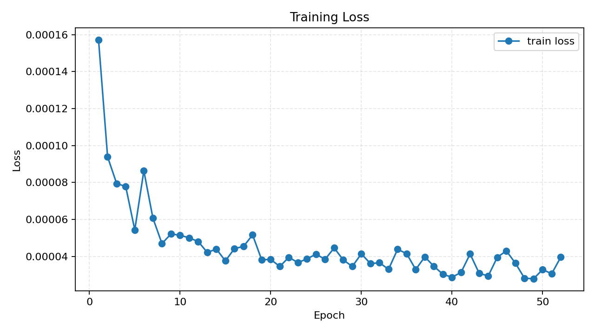
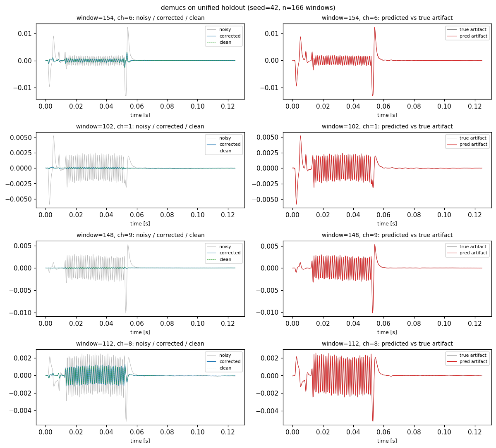

Demucs Explorer
Eine interaktive Tour durch die Architektur, die in unserer Thesis Top-1 wurde — +31.30 dB SNR-Verbesserung auf dem Niazy-Proof-Fit-Datensatz.
- Warum Demucs (ein Modell für Musikquellen-Trennung) das Problem der fMRT-Gradient-Artefakt-Korrektur besser löst als spezifisch dafür entworfene Architekturen.
- Wie der U-Net + BiLSTM-Aufbau im Detail funktioniert — Tab für Tab, Block für Block.
- Welche Hyperparameter (depth, channels) was bewirken — mit Live-Sliders auf die Tensor-Shapes.
- Was Demucs nicht macht (und warum das gut ist).
Paper im Schnellüberblick
Music Source Separation in the Waveform Domain.
arXiv:1911.13254 · Code: facebookresearch/demucs · Facebook AI Research
Headline-Zahlen aus unserem Run
Demucs vs. die anderen 11 Modelle in der Thesis
Konzept & Analogie
Demucs wurde gebaut, um aus einem Musik-Mix vier Stems zu trennen. Wir nutzen exakt dieselbe Architektur, um aus einer EEG-Aufnahme das fMRT-Artefakt herauszuschneiden. Hier die Analogie.
Originales Szenario · Musikquellen-Trennung (MusDB)
Input: 11 Sekunden Stereo-Audio bei 44.1 kHz (≈ 485 000 Samples × 2 Kanäle)
Mix-Spur (was reingeht)
4 Stems (was rauskommt)
Unser Szenario · EEG-Gradient-Artefakt
Input: 3584 Samples bei 4096 Hz (= 7 × 512 ms Epochen, konkateniert pro Kanal)
Mix-Spur (was reingeht)
"Stems" (was rauskommt)
Warum diese Analogie tatsächlich funktioniert
| Eigenschaft | Drum-Spur | Gradient-Artefakt |
|---|---|---|
| Zeitliche Struktur | repetitiv bei Tempo | repetitiv bei TR (Slice-Repetition) |
| Spektrum | breitbandig, transient | breitbandig, transient (Slope-Edges) |
| Phasenkohärenz | im Takt | trigger-locked |
| Verhalten | überlagert das Mix-Signal | überlagert das EEG-Signal |
Die induktive Verzerrung von Demucs (U-Net für lokale Detail-Erhaltung + BiLSTM für periodische Langzeit-Struktur) passt zufällig perfekt auf beide Probleme. Das ist der Kern der Beobachtung in dieser Thesis.
Architektur · live anpassbar
Spiele mit Tiefe und Kanal-Anzahl. Beobachte, wie Tensor-Shapes durch das Netz propagieren — und wann der Bottleneck unter 1 Sample kollabiert.
Parameter-Aufschlüsselung
| Layer | Shape (B, C, T) | Parameter | % des Gesamtmodells |
|---|
Mathematisch passiert pro Encoder-Stufe
Tensor-Shape vorher: (B, Ci-1, Ti-1) → nachher: (B, Ci, Ti) mit:
T_i = floor((T_{i-1} + 2*P - K) / S) + 1 # mit Padding P = K-1 (Demucs-Konvention)
C_i = 2 * C_{i-1}
Parameter im Conv1d: C_i * C_{i-1} * K + C_i
Parameter im 1×1: 2 * C_i * C_i + 2 * C_iEncoder-Block · Schritt für Schritt
Ein einzelner Encoder-Block packt vier Operationen in eine Sequenz. Hover über jeden Layer für Details.
Was hier passiert
Hover über einen Layer links für Details.
Warum GLU statt ReLU?
Demucs nutzt nach dem 1×1-Conv eine Gated Linear Unit (GLU) statt einer normalen ReLU. Mathematisch:
GLU(x) = a ⊙ sigmoid(b) wobei x = [a; b] entlang Kanalachse aufgeteilt wirdDer 1×1-Conv erzeugt also doppelt so viele Kanäle (2C), GLU halbiert sie wieder. Vorteil: die sigmoid-Gate-Komponente lernt, welche Features durchgelassen werden — flexibler als eine harte ReLU-Schwelle. Wird auch in Tasks wie Convolutional Sequence-to-Sequence (Gehring et al. 2017) verwendet.
Verdopplung der Kanäle
Jeder Encoder-Block verdoppelt die Kanal-Anzahl: C_i = 2 · C_{i-1}. Das kompensiert die Längen-Reduktion durch das Striding (Faktor 4 in der Standard-Konfiguration). Insgesamt geht der "Informationsfluss" pro Block also nur um Faktor 2 nach unten (von 4·T auf T/4 · 2C).
Initialisierungs-Rescaling
Ein Kerndetail aus dem Paper (Section 3.2): Ohne spezielle Initialisierung divergieren die Output-Magnituden über die Tiefe um ~20×. Demucs skaliert daher pro Layer:
weight *= sqrt(reference_scale / current_scale)… sodass die Ausgangs-Magnitude bei Initialisierung über alle Schichten konstant bleibt. Im Code: rescale_module(model, reference=0.1).
Decoder-Block · der gespiegelte Encoder
Spiegelt den Encoder, mit zwei Unterschieden: ConvTranspose1d für Upsampling und Skip-Connection-Addition am Eingang.
Was hier passiert
Hover über einen Layer links für Details.
Skip-Connection-Eingang
Bevor das Decoder-Signal den Block durchläuft, wird die passende Encoder-Aktivierung hinzu-addiert (nicht konkateniert wie in vanilla-U-Net, sondern summiert — spart Kanäle, weniger Parameter):
x_in = decoder_input + encoder_output_at_same_level # Skip-addMehr dazu in Tab 7 · Skip-Connections.
ConvTranspose1d statt Unpooling
Im Gegensatz zu einfachem Interpolations-Upsampling lernt ConvTranspose1d seine eigenen Upsampling-Filter. Das ist wichtig, weil ein gelerntes Upsampling pre-existierende Details rekonstruieren kann, die durch das strided Downsampling im Encoder "weichgespült" wurden.
BiLSTM-Bottleneck · im Detail
Zwischen Encoder und Decoder sitzt eine 2-Layer-Bidirektionale-LSTM. Das ist mit hoher Wahrscheinlichkeit der Grund, warum Demucs Conv-TasNet um 8.5 dB schlägt. Hier zeigen wir Schritt für Schritt, wie sie funktioniert.
1 · Anatomie einer LSTM-Zelle
Eine LSTM-Zelle hat drei Tore (Gates) und eine Memory-Spur (Cell State). Klick auf ein Gate, um seine Funktion zu sehen:
Klick oder hover über ein Gate / eine Operation in der Zelle oben für Details.
2 · Live: Gate-Aktivierungen mit konkreten Werten
Spiel mit den Eingängen, sieh wie sich die Gates und der Cell-State verändern. Werte zwischen -1 und 1 für besseres Verständnis.
Eingänge
Gewichts-Biases (vereinfacht)
Berechnete Werte
bf = 2.0 und beobachte, wie das Forget-Gate gegen 1 geht — der Cell-State wird fast vollständig erinnert. Im Original-Paper wird bf bewusst auf 1 initialisiert, damit das Netz "by default" Information bewahrt.
3 · Cell-State über die Zeit · "Conveyor Belt"
Die wahre Magie der LSTM: der Cell-State ct bildet eine fast-lineare "Förderband"-Verbindung von Anfang zu Ende der Sequenz. Information kann über sehr lange Distanzen erhalten bleiben, weil sie nur multiplicative Gates passiert (kein wiederholtes Tanh wie in einer Vanilla-RNN).
4 · Warum "Bi"? Forward-only vs Bidirektional
Eine reguläre LSTM kennt zum Zeitpunkt t nur die Vergangenheit. Aber für viele Tasks (z.B. EEG-Denoising) hilft es auch zu wissen, was als nächstes kommt. Eine BiLSTM löst das, indem sie die Sequenz einmal vorwärts und einmal rückwärts verarbeitet und beide Hidden-States konkateniert.
5 · Demucs: 2 LSTM-Layer übereinander gestapelt
Demucs nutzt nicht eine einzelne BiLSTM, sondern zwei Layer übereinander. Das bedeutet: der Output der ersten BiLSTM-Schicht (Sequenz von Hidden-States) wird zum Input der zweiten Schicht. Vorteil: höhere Abstraktion — Layer 1 lernt lokale temporale Muster, Layer 2 lernt Muster von Mustern.
x_bottleneck shape: (B, C, T_bottleneck) # nach allen Encodern
↓ transpose # PyTorch LSTM erwartet (B, T, C)
x_bilstm_in shape: (B, T_bottleneck, C)
↓ BiLSTM Layer 1 (forward + backward, hidden = C)
h1 shape: (B, T_bottleneck, 2C) # 2C wegen bidirektional
↓ BiLSTM Layer 2 (forward + backward, hidden = C)
h2 shape: (B, T_bottleneck, 2C)
↓ Linear(2C → C) # zurück auf Bottleneck-Channels
out shape: (B, T_bottleneck, C)
↓ transpose
x_bilstm_out shape: (B, C, T_bottleneck) # zurück in Conv-Notation6 · Parameter-Budget
Mit Bottleneck-Channels C = 1024 (Standard-Demucs bei L=4 und C₁=64 → C₂=128 → C₃=256 → C₄=512 → BiLSTM-hidden = 1024):
| Komponente | Berechnung | Parameter |
|---|---|---|
| BiLSTM Layer 1 (4 Gates × 2 Richtungen) | 4 × 2 × (C·C + C·C + C) | ≈ 16.8 M |
| BiLSTM Layer 2 (input ist 2C) | 4 × 2 × (2C·C + C·C + C) | ≈ 25.2 M |
| Linear(2C → C) | 2C·C + C | ≈ 2.1 M |
| Total Bottleneck | ≈ 44 M |
In unserer FACETpy-Adaption mit kleinerem C (256 statt 1024 nach 4 Encodern bei C₁=64) reduziert sich das proportional auf ~2.8 M Parameter für den Bottleneck — etwa 17 % des Gesamtmodells (16.6 M).
7 · Warum gerade BiLSTM gewinnt bei EEG-Artefakten
| Bottleneck-Variante | Modell in der Thesis | SNR-Verbesserung | Inductive Bias für Periodizität |
|---|---|---|---|
| BiLSTM × 2 | Demucs | +31.30 dB | ★★★★★ Hidden-State kann eine ganze Periode "im Gedächtnis" halten |
| Dilated TCN | Conv-TasNet | +22.74 dB | ★★★☆☆ Rezeptiv-Feld muss explizit groß genug sein |
| Multi-Head Transformer | SepFormer | +18.71 dB | ★★☆☆☆ Position-Encoding muss Periodizität explizit kodieren |
Der entscheidende Punkt: ein Gradient-Artefakt ist deterministisch periodisch mit der Slice-Repetition. Eine LSTM lernt das mit minimalem Aufwand — ihr Cell-State kann den Zustand "eine Periode zuvor" direkt enthalten und durch das Forget-Gate gezielt anzapfen. TCNs und Transformer müssen diese Struktur indirekt entdecken (über sehr große Rezeptivfelder bzw. erlernte Positions-Embeddings).
8 · Mathematische Definition · vollständig
# Eingaben: x_t (jetzt), h_{t-1} (prev hidden), c_{t-1} (prev cell)
# Lernbare Parameter: W_i*, W_h*, b_*
# Drei Gates (alle σ-aktiviert, Output ∈ [0,1])
i_t = σ(W_ii · x_t + W_hi · h_{t-1} + b_i) # Input-Gate · "wieviel des Neuen lasse ich rein?"
f_t = σ(W_if · x_t + W_hf · h_{t-1} + b_f) # Forget-Gate · "wieviel des Alten behalte ich?"
o_t = σ(W_io · x_t + W_ho · h_{t-1} + b_o) # Output-Gate · "wieviel zeige ich nach außen?"
# Kandidat fürs neue Cell-State (tanh-aktiviert, Output ∈ [-1,1])
g_t = tanh(W_ig · x_t + W_hg · h_{t-1} + b_g)
# Cell-State-Update: forget altes UND add neues, element-wise multipliziert
c_t = f_t ⊙ c_{t-1} + i_t ⊙ g_t
# └─── alte Erinnerung ───┘ └── neue Information ──┘
# Hidden-Output: gefilterte Sicht auf den Cell-State
h_t = o_t ⊙ tanh(c_t)Bei der bidirektionalen Variante läuft genau dieser Algorithmus zweimal — einmal vorwärts (t = 1..N) und einmal rückwärts (t = N..1) — und die Hidden-States werden konkateniert: [htfwd; htbwd] ∈ ℝ2C.
Skip-Connections · was wäre ohne?
Ohne Skip-Connections würde Demucs hochfrequente Details verlieren. Probier es aus.
Was du gerade gesehen hast
- Original (oben): das Eingangs-Signal mit Niederfreq-Träger + Hochfreq-Detail.
- Bottleneck-Rekonstruktion (Mitte): was das Modell aus dem komprimierten Bottleneck allein rekonstruieren könnte — der Hochfreq-Anteil ist weichgespült, weil das Striding (Faktor 4 pro Stufe) die Sample-Rate effektiv reduziert.
- Mit Skip-Connections (unten): durch die Encoder-Aktivierungen "zurück-injiziert" → Details bleiben erhalten.
Bei EEG konkret: warum das so wichtig ist
Gradient-Artefakte enthalten steile Slope-Edges (Frequenz-Komponenten weit über die Slice-Repetition hinaus). Ohne Skip-Connections würde das Modell die Hauptperiode lernen, aber die scharfen Edges verpassen — was sich als Residual-Klingeln im Output äußern würde. Mit Skip-Connections bleiben diese Edges erhalten.
EEG-Adaption · Domain Transfer
Demucs original wurde für Musik gebaut. Hier die fünf konkreten Anpassungen, die nötig waren — und die ein, die nicht nötig war.
Mapping-Tabelle
| Aspekt | Demucs original (MusDB) | FACETpy-Adaption (Niazy) | Begründung |
|---|---|---|---|
| Eingangs-Kanäle | 2 (Stereo) | 1 (Mono pro EEG-Kanal) | per-Kanal-Verarbeitung; spart Parameter |
| Sample-Rate | 44.1 kHz | 4096 Hz | EEG-Bandbreite reicht bis ~500 Hz |
| Segment-Länge | 11 s ≈ 485k Samples | 3584 Samples (= 7 × 512 ms) | 7-Epochen-Trigger-Kontext fürs Modell |
| Tiefe L | 6 | 4 | Bottleneck-Collapse bei L=6 (3584/4⁶ < 1) |
| Start-Kanäle C₁ | 64 | 64 | unverändert übernommen |
| Ausgangs-Stems | 4 (Drums/Bass/Vocals/Other) | 1 (nur Artefakt) | Korrektur = noisy − artifact |
| Loss | L1 über alle 4 Stems | L1 über vorhergesagten Artefakt | identische Formel, kleinere Skala |
| Optimizer | Adam, lr=3e-4 | Adam, lr=3e-4 | unverändert |
Was nicht angepasst werden musste
Die Kern-Architektur — U-Net-Topologie, BiLSTM-Bottleneck, GLU-Aktivierung, Skip-add-Connections, Weight-Rescaling — wurde komplett unverändert übernommen. Auch der L1-Loss und die Adam-Optimizer-Defaults blieben. Das ist die Schlagzeile dieser Thesis-Sektion: trotz Domain-Wechsel von Musik zu EEG funktioniert die Architektur "out-of-the-box".
Trigger-Kontext: das einzige nicht-triviale Detail
Statt willkürlich Audio-Slices zu nehmen, konkateniert FACETpy 7 zeitlich aufeinanderfolgende, trigger-locked EEG-Epochen zu einem 3584-sample-Eingang. Vorteil: das Modell sieht vor und nach der zu korrigierenden Mittel-Epoche jeweils 3 Nachbar-Epochen, kann also die Periodizität des Gradient-Artefakts direkt lernen.
Bei der Inferenz schneidet der DemucsAdapter dann nur die mittlere Epoche aus dem 3584-Sample-Output heraus (samples [3·512 : 4·512]) und subtrahiert sie vom Eingangs-Signal. Die randständigen Epochen werden implizit durch den Trainings-Loss mitoptimiert, aber nur für Kontext verwendet.
Per-Channel-Verarbeitung
Demucs läuft pro EEG-Kanal separat (Execution-Granularity = CHANNEL in der FACETpy-Notation). Das hat zwei Folgen:
- Plus: identische Architektur für 30, 64 oder 128 EEG-Kanäle — keine Anpassung nötig, kein Re-Training für andere Setups.
- Minus: das Modell sieht keine räumliche Information. Spatial-aware-Modelle wie ST-GNN könnten theoretisch besser sein — sind es aber empirisch nicht (ST-GNN: +11.0 dB vs Demucs: +31.3 dB).
Resultate aus dem Run
Was Demucs in unserem Setup tatsächlich erreicht hat, mit Vergleich zu allen anderen 11 Modellen.
Headline-Metriken (Unified Holdout, 166 Windows × 30 Kanäle)
SNR-Verbesserung im Familien-Vergleich
Trainings-Verlauf
Demucs konvergiert sauber und monoton:
- 52 Epochen Training auf RTX 5090, ca. 406 s Wall-Clock
- Best Epoch = 49 (Early-Stopping mit Patience 12)
- Best Val L1 =
2.78 × 10⁻⁵ - Keine Loss-Spikes, keine Diskriminator-Tug-Of-War wie bei DHCT-GAN

Korrektur-Beispiele aus dem Holdout

Caveat: Demucs hat einen TorchScript-Bug
map_location="cpu". Workaround: ein zweites demucs_cpu.ts wurde manuell von CPU aus re-traced. Saubere Fix-Optionen wären torch.jit.script statt trace, oder ein "retrace_on_cpu"-Post-Step im _export_pytorch_torchscript-CLI.
Referenzen & weiterführende Lektüre
Primärliteratur
https://arxiv.org/abs/1911.13254
Verwandt & vergleichend
FACETpy-spezifisch
Im Repo
src/facet/models/demucs/training.py— Modell-Definitionsrc/facet/models/demucs/processor.py— FACETpy-Adaptersrc/facet/models/demucs/HANDOFF.md— Implementations-Notizensrc/facet/models/demucs/documentation/research_notes.md— Paper-Mapping, Hyperparameter-Begründungen, offene Fragensrc/facet/models/demucs/documentation/model_card.md— Modell-Karteoutput/model_evaluations/demucs/holdout_v1/— Unified-Holdout-Resultatedocs/research/run_2_plan.md— Run-2-Plan (Demucs braucht keine Änderungen)
Diese App wurde am 2026-05-12 generiert aus den Repo-Daten und ist als statische HTML-Datei portierbar. Lokal öffnen via open docs/interactive/demucs_explorer.html.